Birds Flew Over The Spire
This page is a guide to learning
Gary Ryan's song
Birds Flew Over The Spire on a tapping instrument such as the
Chapman Stick or the acoustic Dragonfly DFA.
There is a score/tablature, fretboard diagrams, and
(to be done) youtube video instructions, that will help you along the
way.
A bit of background about the piece
-
Birds Flew Over The Spire is the third of a three piece suite entitlted
City Scenes
- Take a listen to a few versions of this piece.
This version by the wonderful Stephanie Jones, is the
most noteable I think.
Musescore score with tabs
The Score (and tabs) to go along with the diagrams below is available
Here.
even if you can't read music well (or at all), Bringing up the
score is very useful. I can't emphasize this enough... why?
- you can play/loop a range of measures (phrase) in the score
- view the diagram associated with those measures
- play along with the loop until you've got the phrase down
Even if you don't use the same tuning as the one the score/diagrams.
the shapes in the diagram will generally be the same. so you
can go a long way with those resources even with a different
tuning
The Song
-
The piece is in E Major throughout.

-
The Score calls for a "Floating and Serene" rubato. Stephanie's
interpretation
accomplishes this wonderfully and allows the
beauty of this piece to shine though.
I've added some fermata and ritartando symbols to my
arrangement to emphasize this. I've also slowed the tempo
from 120 to 85, since I find it has a more contemplative feel at this
reduced pace, which I like.
Bar 19

{kind=link}
{kind=link}